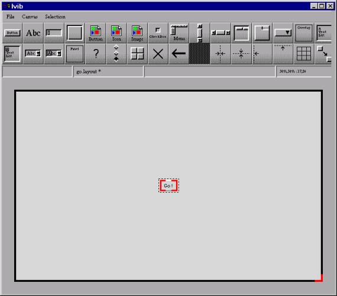
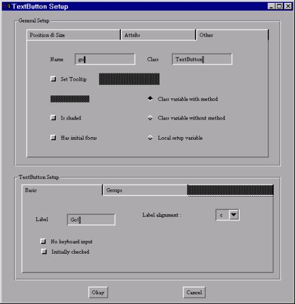

An
IVIB Primer
Susie Jeffery and Clinton Jeffery
Unicon Technical Report #6
April 27, 2001
Abstract
Unicon's improved visual interface
builder program IVIB offers many more types of widgets than its precursor, VIB.
IVIB also supports colors and fonts, allowing the programmer a wider variety of
appearances. Using IVIB requires at least a passing familiarity with the
object-oriented paradigm, especially in order to customize an interface, or
extend it with new behavior. This primer explains the rudiments of using IVIB
in glorious click-by-click detail.
Department of Computer Science
New Mexico State University
Las Cruces, NM 88003
This work
supported in part by a National Library Medicine Special Information Services
ORISE grant.
Introduction
Most applications these days
provide easy to use, graphical interfaces.
For the Unicon programmer, several options are available to create such
an interface. One option is to use the graphics facilities described in the
book "Graphics Programming in Icon" [Gris98]. The Icon Graphics book
includes chapters on writing user interfaces using the vidgets library and its
interface builder, VIB. Unfortunately, these facilities are hard to customize,
either with new widgets or with attributes such as colors or fonts. Another
option for MS Windows programmers is to write an interface using MS Windows
native facilities available from Icon; they are documented in Icon Project
Document 271, but are very limited.
This report describes how to use
Unicon's new GUI toolkit and its interface builder program, IVIB. This package
was written by Robert Parlett and is being extended and maintained by the
authors. Compared with the existing Icon-based tools, Mr. Parlett's toolkit is elegant,
feature-rich, extensible, and deep. Unless you are familiar with similar class
libraries, IVIB and its GUI toolkit may seem daunting in its complexity. This
document demystifies typical uses of IVIB. We hope you come to enjoy it as much
as we have. A great deal of additional documentation on these tools can be
found in the book "Programming with Unicon" [Jeff01].
Hello, Ivib
Before we delve into a real
application, let us create a rhetorical program with a single button that
executes a procedure when we click on it. For the sake of tradition, let's
suppose our procedure p() is as follows:
procedure
p()
write("hello, world")
end
To start, execute the Ivib
program. Below its title bar it has a menu bar with File, Canvas, and Selection
menus, and below that it has a tool bar that allows you to easily create each
kind of widget in the GUI toolkit. Below the toolbar is the main Ivib drawing
area, called the canvas.
The Button widget is the top
leftmost widget in the toolbar. Go ahead and click on it; a button labeled
"Button" appears in the upper left area of the canvas. You can drag
it approximately to the center of your canvas area. To modify aspects of the
widget's functionality or appearance, right click on it and select Dialog from
the popup menu. The widget's setup dialog allows you to change all aspects of
the widget. The top half of the dialog controls properties relevant to all
widgets, such as position on screen, graphical attributes, and what variable
name will hold the widget. The bottom half of the dialog controls properties
specific to the particular type of widget being modified (in this case, a
TextButton). TextButtons have a Label attribute that contains the text on the
face of the button. Click in that text area and change "Button" to
"Go!". Then click on the Okay button at the bottom of the dialog.
Your resulting screen might look something like this:

At this point, you have created a
graphical interface with a button on it. When you save this as go.icn, Ivib
will generate the Unicon source code for the graphical interface, with the Ivib
representation of that graphical interface encoded as a strange looking comment
at the end of the file. If you compile it, you can produce a working program,
but it won't do anything when the Go! button is pressed.
Ivib and
Event-driven Programming
Event-driven programming is
writing code in terms of responses to events. You don't own the control flow,
the GUI toolkit does. The GUI toolkit calls certain methods in response to each
event; your options are to either stick your application code directly in those
method bodies, or stick calls to your code in those method bodies.
Suppose our procedure p() given
above is located in a file p.icn; what we want to do is make the interface call
p() whenever the button is pressed. An object (whose class is a subclass of
_Dialog) owns the control flow and processes events. Our button, and any other
widget we add to the interface, is an object designated by a named field in the
_Dialog object. For every event, the interface asks each widget whether it can
handle the event. When it figures out to which widget the event belongs, it
calls a method handle_x(), where x is the name of the widget. To sum up: for
each widget foo there is a variable foo that holds the actual widget and a
method handle_foo() that is called when an event lands on the widget. Both the
variable and the method are local to that _Dialog object.
In order for our button to call
our procedure p(), we need to find out (or assign) the button's variable name.
To do this, select the button, right click on it, and open its Dialog. In the
General Setup in the upper part of the dialog, the rightmost tab, named Other,
contains a Name field that determines the variable name for this widget. Change
the name from "text_button_1" to "go". Your dialog should
look something like this:

Click Okay to exit the dialog.
Save the ivib session in file go.icn.
At this point, you can compile
go.icn as a standalone program that does nothing (unicon go). But it might be
more interesting to edit go.icn and insert a call to our procedure p() into the
handle_go() method:
method
handle_go(ev)
p()
end
Save go.icn with this call to p()
added, and then compile go.icn and p.icn together (unicon go p), and run it
(go). This application will run excellently as described and write "Hello,
world" to standard output when you click the button.
This moment of triumph is as good
a time as any to point out a couple nuisances. The method handle_go() is called
for each low-level Icon event, so it will be called several times (for mouse
press, drag(s), and a release) for one conceptual press of the virtual button
we have created. You can change your handle_go() code to look like:
if ev.event===&lpress then p()
to deal with this sort of thing.
The second nuisance is specific to MS Windows, and won't be a problem if you
implement the preceding fix. If we write our "Hello, world" and it
creates a new console window, the new console window may pop up so fast that
our button release event will go to the console window, instead of our GUI
window. In the absence of a release event, our GUI window thinks the mouse
button is still down. The button retains its "still pressed"
appearance and the GUI toolkit generates autorepeat events, so you may see an
infinite stream of "Hello, world" on your console, until you kill the
application or click on the Go! button again. At least we warned you! The good
news is that this was a pretty artificial example; most buttons do not write to
(or pop up) the console window.
A Simple IVIB
Application
For a more realistic example, we
are going to create a simple application that will demonstrate the use of
Buttons, Text List boxes, Menu Bars, Labels, multiple screens, File
Input/Output, and error handling. Our application will contain a main screen
with a Menu Bar and a Button. A File Selection Dialog box listing all the files
in a directory will be displayed when the button is pressed. The Menu Bar will
have options to Exit, display the About Box, and display a Help File.
This dazzling example is given in
glorious click-by-click detail in order to familiarize you with IVIB and to
teach you many of its capabilities by osmosis. All you should have to do is
follow the instructions. If we are lucky, you will feel recklessly capable of
writing similar applications on your own afterwards.
First, create a directory where
you can save all the files created for this application. Change into this
directory, and launch Ivib. You will see a blank canvas. We are now going to
create a Menu Bar. In particular, we will have a File menu that pulls down to
an Exit command and a Help menu that pulls down to an About box and a Help
command.
Add a Menu Bar by
clicking on the Menu component from the Ivib Menu. A Menu Bar with an Edit me
item will be added to the canvas. Right click on it and select the dialog
option. The MenuBar setup in the bottom box of the dialog will look like this:
|
|
-----------Edit
me
| |
| |
|
|
Add the File menu.
Select Edit me, hit the edit button, and enter the following:
Object
name : file_menu
Class
name : Menu (default)
Label:
File
Hit Okay.
The tree will now look something
like this:
|
|
-----------File
|
|<-------------------------------------click here to add a menu label
|
|
Add the Exit command.
Highlight the branch by clicking in the position shown above. The Add label
button will appear, so click on it. A new branch labeled Edit me will be added
to the branch. Edit this branch by clicking on the Edit button and enter:
Object
name : exit_menu_item
Class
name : TextMenuItem (default)
Label:
Exit
Hit Okay.
The tree will now look something
like this:
|
|
-----------File
| |
| |-------------Exit(Txt)
| |
|
<-----------------------------------------click here to add a menu item
Add the Help menu from
the trunk of the tree. Highlight the branch by clicking in the position shown
above. The Add Menu button will appear so click on it. A new branch labeled
Edit me will be added to the tree. Edit this branch by clicking on the Edit
button and enter:
Object
name : help_menu
Class
name : Menu (default)
Label:
Help
Hit Okay.
The tree will now look something
like this:
|
|
-----------File
| |
| |-------------Exit(Txt)|
| |
|
|---------Help
|
|<-----------------------------------------click here to add a menu
label
|
|
Add the About command.
Highlight the branch by clicking in the position shown above. The Add label
button will appear, so click on it. A new branch labeled Edit me will be added
to the branch. Edit this branch by clicking on the Edit button and enter:
Object
name : about_menu_item
Class
name : TextMenuItem (default)
Label:
About...
Hit Okay.
The tree should now look something
like this:
|
|
-----------File
| |
| |-------------Exit(Txt)
| |
|
|---------Help
| |
| |------------About
|
|<-----------------------------------------click here to add a menu
label
|
Add the Help command.
Highlight the branch by clicking in the position shown above. The Add label
button will appear, so click on it. A new branch labeled Edit me will be added
to the branch. Edit this branch by clicking on the Edit button and enter:
Object
name : help_menu_item
Class
name : TextMenuItem (default)
Label:
Help
Hit Okay.
The tree will now look something
like this:
|
|
-----------File
| |
| |-------------Exit(Txt)
| |
|
|---------Help
| |
| |------------About(Txt)
| |
| |------------Help(txt)
|
Click the Other Tab and enter the following to name the menu component as
follows:
Name menu_bar
Hit Okay.
Add a Button to the canvas, by clicking on the Button Component from the Ivib Menu
Bar. Move the Button to somewhere near the left side of the canvas.
Right click on the Button and
select the dialog option. On the Other
Tab enter:
Name ListBtn
On TextButton Setup: (bottom box
of dialog)
Label List Files
Hit Okay.
Add a Message Box Label to
the canvas by clicking on the Label Component (designated "Abc") on
the Ivib menu bar. Move the label to the bottom of the canvas. Resize the
length to almost the size of the canvas and resize the height to about the same
height as the button.
Right click on the Message Box and
select the dialog option. On the Other
Tab enter:
Name
MsgBox
Click the Draw Border check box so that there is a border.
On the Attribs Tab click Add and replace the Edit and me to fg and red
respectively. This will change the foreground color to red.
Attrib Value
fg red
Hit the Apply Button to
save the changes.
click
Add and
and replace the Edit and me with the
values below. This will change the font attributes.
Attrib Value
font serif,18,bold
Hit the Apply Button to
save the changes
On Label Setup: (bottom box of
dialog)
Label
(make
it blank - this label will be our message box)
Hit Okay.
Enter the canvas attributes. Either right click on the Canvas for Dialog or go to the
file menu option Canvas->Dialog prefs.
On the Other Tab enter:
Name dialogmain
On the Attribs Tab change the background from pale gray to yellowish white by selecting the
bg value on the table and changing them in the bottom box as follows:
Attrib Value
bg yellowish
white
Hit the Apply Button to
save the changes
On the Code Generation Tab, leave the Generate main() procedure button on
so the box is checked.
We want to put our main procedure in this file.
Hit Okay.
From Ivib, go to the File menu and
save the file.
File->Save as: main.icn
Make sure you save them in the
directory you made for this application
We want to create a small canvas
for our About box. The About box will contain one Text List containing
application information. From Ivib, go to the File menu and select New and a
blank canvas will appear. Resize the canvas by dragging the bottom right corner
so it is about 3/4 the original size.
Add a Text List Box by clicking on
the Text List component on the Ivib Menu Bar. Move it to the center and
resize it by making the length about 1/3 as large as the original size. Then
right click on it to get the dialog selection. Under the Other Tab enter:
Name
AboutTxtLst
Hit Okay.
Add the canvas attributes. Either right click on the Canvas for Dialog or go to the Ivib Menu Bar
Canvas->Dialog prefs.
On the Code Generation Tab, Click on the Generate main() procedure button
so the button is not down.
We do not want a main procedure in
this file.
On the Other Tab enter:
Name dialogabout
hit Okay.
From Ivib, go to the File menu and
save the file.
File->Save as: about.icn
Make sure you save them in the
directory you made for this application
We want to create another small
canvas for the Help information. This canvas will contain a Text List,
a Cancel Button and a Label for
messages. From Ivib, go to the File menu and select New and a blank canvas will
appear. Resize the canvas by dragging the bottom right corner so it is about
3/4 the original size.
Add a Text List Box
to this canvas by clicking the Text List
component from the Ivib Menu Bar. Move it to the center and resize it by making
the length and width about 1/3 as large as the original size. Then right click
on it to get the dialog attributes. On the Other
Tab enter:
Name
HelpTxtLst
Hit Okay.
Add a Button to the
canvas, by clicking on the Button Component from the Ivib Menu Bar. Move the
Button to somewhere near the bottom of the canvas below the text box.
Right click on the Button and
select the dialog option.
On the Other Tab enter:
Name CancelBtn
On TextButton Setup: (bottom box of dialog)
Label Cancel
Hit Okay.
Add a Message Box Label to
the canvas by clicking on the Label component (Abc) on the Ivib menu bar. Move
the label to the bottom of the canvas and resize it to be almost the length of
the canvas.
Right click on the Label and
select the dialog option.
On the Other Tab enter:
Name
MsgBox
Click the Draw Border check box so that there is a border.
On Label Setup: (bottom box of
dialog)
Label
(make
it blank - this label will be our message box)
Hit Okay.
Add the canvas attributes. Right click on the Canvas for Dialog or go to the Ivib Menu Bar
Canvas->Dialog prefs. On the Code generation Tab, click on the
Generate main() procedure button so the box is not checked.We do not want a
main() procedure in this file.
On the Other Tab enter:
Name dialoghelp
Hit Okay.
From Ivib, go to the File menu and
save the file.
File->Save as: help.icn
Make sure you save them in the
directory you made for this application.
You can exit out of Ivib now.
The code is now done for the GUI
components. It is in the files main.icn, about.icn, and help.icn.
If you look at the file main.icn
you will notice Ivib created a class called dialogmain and various methods that
are associated with the components we added. For example, method
handle_about_menu_item will be the method used when you click on the about menu
item on the menu bar. Method handle_DBTxtLst will be the method used to process
the text list. Method init_dialog() is the first method called when the class
is created. It is a good place to initialize variables. It is our job to write
the code for these methods.
If any of the components are not
spelled correctly, correct them using Ivib to keep the source consistent with
the graphics. However, when you change the names using Ivib, Ivib will add your
new names, but
not delete the old names. You may
want to search the file for any references to the old names and
remove all methods and references
to the old names. If you do not remove the old names, your code will
still work, but you will have
unused methods and objects cluttering up the file. Also, remember Unicon
is case sensitive. All
references to the objects must be the same case.
Main Dialog Class. Edit the file
main.icn using your favorite editor. This file contains the main procedure,
which starts the application by displaying the main screen. Some of the methods
In the file main.icn are shown
below:
#
# dialogmain is the class created by Ivib in
the file main.icn
#
class
dialogmain : _Dialog(exit_menu_item, about_menu_item, help_menu_item, ListBtn,
MsgBox)
method handle_exit_menu_item(ev)
end
method handle_about_menu_item(ev)
end
method handle_help_menu_item(ev)
end
method handle_ListBtn(ev)
end
method handle_default(ev)
end
method init_dialog()
end
method end_dialog()
end
end # dialog class
Find the main procedure and add
the code as shown below. This will cause the main screen to be displayed when
the program starts up.
procedure
main()
dialogmain().show_modal()
end
Add code so the About Canvas is
displayed when the About Menu item is selected. Add the following code to
handle_about_menu_item:
method handle_about_menu_item(ev)
dialogabout().show_modal()
end
Add code so the Help Canvas is
displayed when the Help Menu item is selected. Add the following code to
handle_help_menu_item:
method handle_help_menu_item(ev)
dialoghelp().show_modal()
end
We also need to add code to terminate
the application when the Cancel Menu item is selected. Add the dispose()
function to handle_Exit_menu_item.
method handle_exit_menu_item(ev)
dispose()
end
Save this file as main.icn.
Make sure you save it in the directory you made for this application.
Makefile. Now we need to create a makefile to compile and link all
our code together.
Create another file named makefile and enter the following. Be
careful to follow makes syntax by beginning the unicon command lines with tab
characters; some text editors (such as edit) convert these to spaces on you,
which may cause the make (or nmake) program to fail. Notepad, or better yet a real programmers editor, will preserve
your tab characters.
.
#
# makefile
#
CFLAGS=-c
main.exe: main.u about.u help.u
unicon -G -o
main.exe main.u about.u help.u
about.u: about.icn
unicon $(CFLAGS)
about
help.u: help.icn
unicon $(CFLAGS)
help
main.u: main.icn
unicon $(CFLAGS)
main
Make sure you save it in the
directory you made for this application
At the MS-DOS prompt enter:
Ø nmake
Hopefully, there are not any
errors at this point.
Note: If nmake is not available
you can enter at the Dos prompt:
>unicon -G main.icn about.icn help.icn
(in that order)
At the MS-DOS prompt enter:
>
main
The main screen will be displayed.
You should be able to hit the menu items and view the help and about dialogs.
The About Box. Edit the file
about.icn using your favorite editor. Some of the methods
In the file about.icn are shown
below
##
# dialogabout is the class created by Ivib in
the file about.icn
#
class
dialogabout : _Dialog(AboutTxtLst)
method handle_AboutTxtLst(ev)
end
method init_dialog()
end
method end_dialog()
end
end # aboutDialog class
We need to fill the Text List Box
with the About information. First, we add code to the method handle_AboutTxtLst
to display a simple list. Then we add code to init_dialog to call
handle_AboutTxtLst so the Text List is filled when the canvas is displayed.
Edit about.icn and add the following
code to the methods.
method
handle_AboutTxtLst(ev)
local l
l := [
"This is an example
application",
"To demonstrate an About Box",
"Also, how to show another
form",
"Plus: using Makefiles with",
"Ivib"
]
AboutTxtLst.set_contents(l)
end
method
init_dialog()
handle_AboutTxtLst(ev)
end
The Help Screen. Edit the file help.icn using your favorite editor. Some of the
methods
In the file help.icn are shown
below
##
# dialoghelp is the class created by Ivib in
the file help.icn
#
class
dialoghelp : _Dialog(HelpTxtLst, CancelBtn, MsgBox)
method handle_HelpTxtLst(ev)
end
method handle_CancelBtn(ev)
end
method init_dialog()
end
method end_dialog()
end
end # helpDialog class
The help screen will read in a
text file and display it in the text list we created. First, we add code to the
method handle_HelpTxtLst to open the help file. Then we add code to init_dialog
to call the method handle_HelpTxtLst so the Text List is filled when the canvas
is displayed. Edit the file help.icn
and add the following code to the methods:
method handle_HelpTxtLst(ev)
local l, helpfile, fd
helpfile := "help.txt"
if fd := open(helpfile) then {
MsgBox$set_label("File " ||
helpfile || " ")
l := []
while put(l, read(fd))
HelpTxtLst$set_contents(l)
close(fd)
}
else
MsgBox.set_label("Cannot open
help file: " || helpfile)
end
method init_dialog()
handle_HelpTxtLst(ev)
end
We also need to add code to
terminate the application when the Cancel Button is clicked. Add the dispose()
function to handle_CancelBtn.
method handle_CancelBtn(ev)
dispose()
end
You will also need to create a
text file named help.txt with any information you find helpful.
The Main Screen. The main dialog will demonstrate
the use of file dialog box. It will open a
file dialog when the List Button is pressed and display the selected file in a
message box. First we need to link
In the FileDialog class from the
Unicon class library. Add the link statement before the dialogmain class
declaration as follows:
link
file_dlg
class
dialogmain : _Dialog(exit_menu_item, about_menu_item, help_menu_item, ListBtn,
MsgBox)
Add the following code to the
ListBtn method. The file dialog will be displayed when the List button is
pressed and the selected file will be displayed in the MsgBox.
method handle_ListBtn(ev)
local
fd, s
# display the file dialog only after the
button has been released
if not (ev.event === (&lrelease |
&rrelease)) then fail
fd := FileDialog()
fd.set_extra_attribs(["label=Select
file demonstration"])
fd.show_modal(self)
s := fd.get_result() | fail
if /s | s=="" |
s[-1]=="\\" then {
MsgBox.set_label("Select a
file")
return
}
MsgBox.set_label("File : " || s
|| "
was selected ")
end
The application is now complete.
Use the makefile or Unicon command to compile and
link the program and run the
application as described in the Makefile
section above.
Now you can go back and add
labels, resize components as needed.
Conclusions and
Future Work
Using IVIB is easy, but really
becoming proficient with it requires some familiarization and a certain comfort
level with object-oriented programming. We believe this GUI toolkit is easier
to learn than most competing tools. We plan to merge traditional IDE code
editing, compiling, and executing capabilities into Ivib in a future release.
It is possible to use Ivib with
regular procedural code, and it would be easy to extend Ivib to call a
procedure for each event. This
would allow Icon programmers to benefit from the new GUI toolkit. We would be
happy to see this added to Ivib.
Acknowledgements
Robert Parlett inspired and
astonished us by writing a GUI library better than we could have hoped for,
entirely on his own, as a volunteer effort. His work was done in Idol and
porting it to run under Unicon allowed us to identify some bugs in the new
compiler. We hope our work adds value to Roberts accomplishment. Phillip
Thomas provided corrections to this manuscript.
.
References
Ralph Griswold, Clinton Jeffery,
and Gregg Townsend, "Graphics Programming in Icon", Peer-to-Peer
Communications, 1998.
C. Jeffery, S. Mohamed, R. Pereda,
R. Parlett, "Programming with Unicon", unicon.sourceforge.net/ub/ub.pdf,
2001.